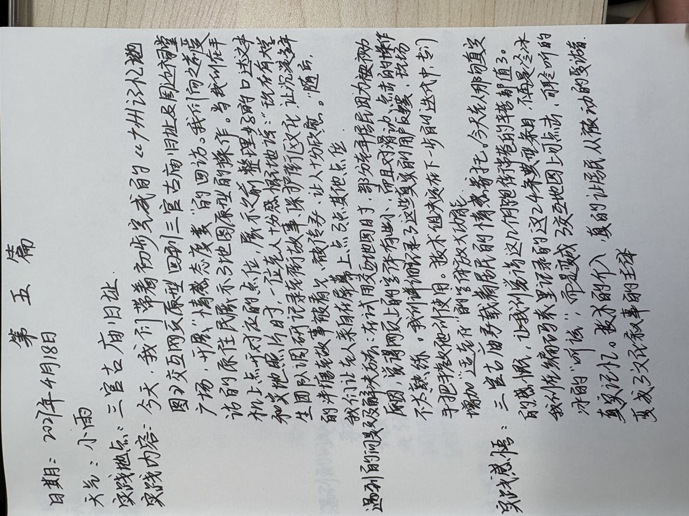
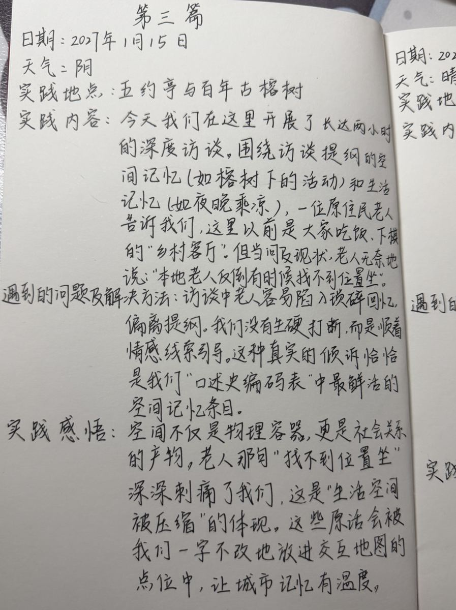
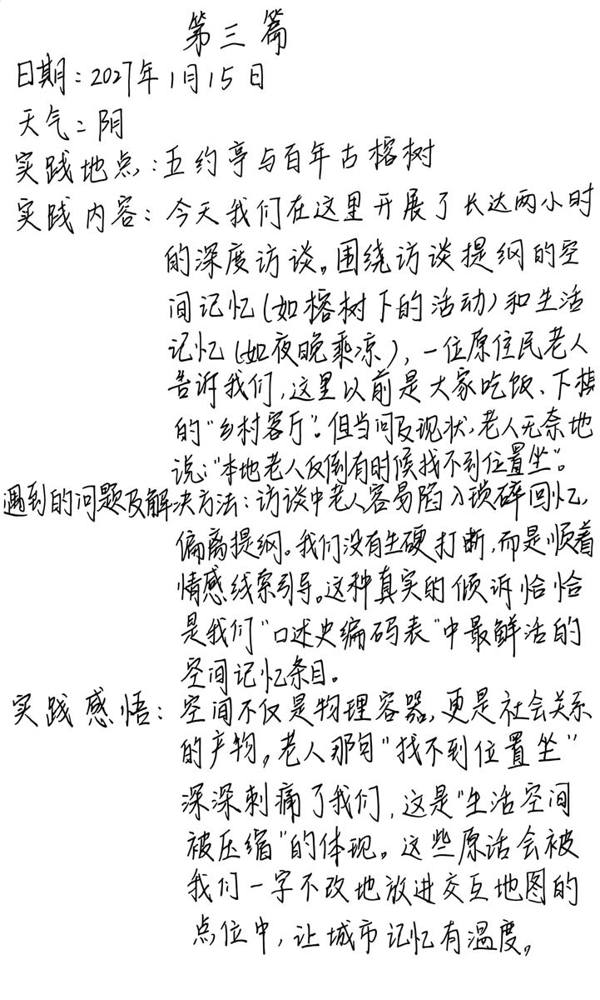

01你们不来问，
这些事就真的没人知道了。
泮塘五约的故事不只藏在古建筑里，也藏在青石板路的变化、榕树下的一盘棋、天井落下的雨声、邻里互赠的马蹄和一代人对老街的乡愁里。
这是一张记忆路径地图。它用于聆听、阅读与回望，不作为精确导航使用。
点开地图上的记忆坐标，听见居民的声音，查看与它相连的照片、文字和艺术作品。
访谈录音不是背景音乐，而是居民亲自留下的证据。点位、受访者、主题和访谈问题共同组成一条可追溯的记忆链。
从第一次走进巷口，到居民打开一段记忆，十二篇田野日志记录了这张地图怎样被共同完成。

01
05
10点位冰箱贴、民居表情包、明信片和水生五秀 IP，把口述史转译成可以被看见、触摸和分享的视觉语言。
项目以原住民为主体，以口述史为根，以数字技术为桥，完成一条从记录到传播的实践链条。
深度访谈、参与式观察、影像与录音记录。
空间、民俗、生活、情感四个维度整理口述。
GIS 点位、声音档案、艺术设计与 H5 交互。
地图、展览、文创和社区反馈持续迭代。